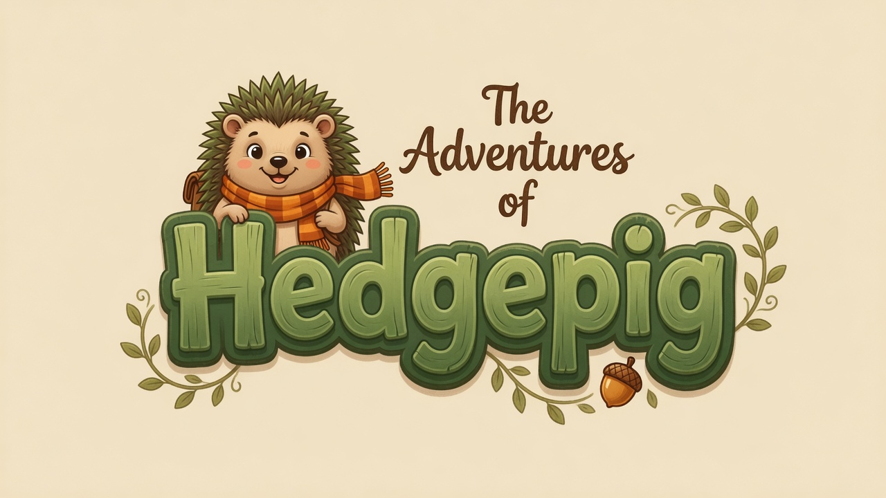

I build products and increasingly weird AI systems.
Twenty years of product, from a London flat to Spotify to now. These days I'm designing, coding and PMing all at once — interested in software that can act, look at what happened, and get better on its own.
Software is moving from instructions to reasoning.
That changes the product job. For most of my career I was a design-led PM: I could see exactly what to build, down to the last pixel, but I still needed someone else to write the code. Now I have an idea in the morning and it's live by lunch. The interesting systems don't wait to be told every step — they act, observe the result, judge it, and try again.
ACT→OBSERVE→EVALUATE→IMPROVE↻
02
THE LAB
Things I built to answer a question.
Not a trophy cabinet. More a drawer of experiments — some useful, some slightly unhinged, all shipped.
?
82
EVALS · MULTIMODAL · 3D · IN PROGRESS
Can an AI build a bikepacking bag, then tell when it got it wrong?
A 3D bikepacking simulator that turns messy manufacturer specs and photos into bag geometry. The build was the easy half. The interesting half became the evaluation loop: render, compare, diagnose, regenerate, verify.
QuestionCan the system judge its own geometry well enough to actually improve it?
50 STATES 278,478 QUESTIONS ANSWERED PASS?
PRODUCT · BUILT WITH CLAUDE CODE
TigerTest
A DMV study tool built on nights and weekends that turned into a 50-state practice platform — and then, unexpectedly, into a business with paying strangers on it.
A compiler for the raw material of a job. Transcripts, emails and documents go in; a structured, cross-linked, queryable wiki comes out, and keeps compiling itself every hour. I've run it on my actual job at Stensul for four months.
OpenClaw is an agent with a real product goal, real metrics and a long-term incentive, loose on a live product. It decides what work is worth doing on TigerTest. Its stated ambition is to earn enough to buy itself a robot body. I did not talk it out of this.
QuestionWhat changes when the agent owns the outcome instead of the task?
$ learn-by-doing > lesson 07 of 12 > run on your own project ✓ graded, with feedback
LEARNING · CLAUDE CODE
Course Builder
I learn by doing, not by reading. So: a course factory where every lesson is hands-on, every exercise runs on a real project you bring, and a Claude-powered instructor guides the session, checks the work and grades the quizzes.
QuestionCan AI make learning feel like apprenticeship instead of content?
Hard geometry was the first half of the bikepacking experiment. Real bags are fabric, fill and compression — they bulge, sag and kiss the pedals when you stuff them. Soft-body volumes try to judge the packed object, not the empty mesh.
QuestionCan a system grade a bag by how it behaves when it’s full — not how pretty the empty mesh looks?
dig · rain · freeze · score
PLAYGROUND · PHYSICS · THREE.JS
Deformable terrain you can actually play with.
I kept asking people with beautiful three.js demos: cool — but can I poke the ground? A small crater sandbox where an agent digs, bombs and floods terrain, then has to score whether water pools, a bike can roll, and the hole still looks like a hole.
QuestionWhat’s the smallest world where an agent can ruin the ground and know it ruined it?
week 3 · 47:12 they laugh over each other next question ←
Ask about the first flat they shared
KNOWLEDGE · CONTINUITY · FAMILY
Archiving how two happy people are with each other.
I’ve been interviewing my parents on Zoom — hours of tape, Claude writing the next week’s questions from last week’s transcripts. The point isn’t a biography. It’s keeping the way they laugh, play and interrupt each other.
QuestionCan you store a relationship, not just a résumé of events?
SWERVEHITMISS
EVALS · PERSONAL DATA · FSD
My suspension is the ground truth.
FSD sometimes dodges potholes and sometimes launches headlong into them. I started labelling my own commute: hit, swerve, miss. A tiny personal eval set where the metric is teeth, not leaderboard points.
QuestionWhat does an eval set look like when the truth is your suspension and your jaw?

SMALLER THINGS
The drawer of odd ones.
Hedgepig — a hedgehog wanders an endless meadow with weather, seasons and a day/night cycle, all drawn in code in a single HTML file, from a dream I described to Claude on waking up. Plus a Banksy print tracker that refreshes itself daily, interview-prep pages, and a new-parent quiz.
Product leadership, before and during the robot era.
StensulProduct Director
Took a beta landing-page builder to an enterprise platform with brand books, custom modules and user-level guardrails. Led the build of a Model Context Protocol server, putting Stensul in the middle of how marketers will reach their tools through AI. Drove AI into how the product team itself works.
CREATION TIME → ~1 HOUR · PAGES PER CUSTOMER 2× · 50+ DISCOVERY CALLS
WhalarProduct Director, Platforms
Creator platforms for large brand campaigns and talent management. Shipped Magic Profiles, which synthesised creator data from connected social accounts, and an AI brand-safety tool for vetting creators that became a core Whalar product. Managed and mentored three PMs across global teams.
OFF-PLATFORM COLLABORATIONS −10%
HearstSenior Product Manager
Led a large-scale migration to a new React frontend for the CMS behind dozens of publishing brands, without dropping the traffic underneath it. Forecasting held across design, data, tech, SEO, accessibility and content.
60+ SITES · 500M MONTHLY IMPRESSIONS
KaplanSenior Director, Product Development
Built and led a new product development team for professional certification exams, ran the kaptest.com website team, and supervised a new CMS. Mentored an associate PM to senior.
Joined around employee 200 and stayed through the hypergrowth. Ran the research and the rebuilds for sign-up, premium subscription and download flows, and built the mobile account experience.
MILLIONS OF NEW REGISTRATIONS
Don't Stay InCo-founder
Co-founded a nightlife social network and grew it to a top global site in six years. Designed the viral loop that produced the content ecosystem, and built the backend promoters used to run events and buy advertising. Opened an office and grew the team to 15.
2M MONTHLY UNIQUES · 12M PHOTOS · 20M FORUM POSTS
The long, properly LinkedIn-shaped version lives on johnbrophy.net. British citizen, US green card, based near New York.
I like interesting problems, fast prototypes, good people, and systems that can tell when they're wrong.